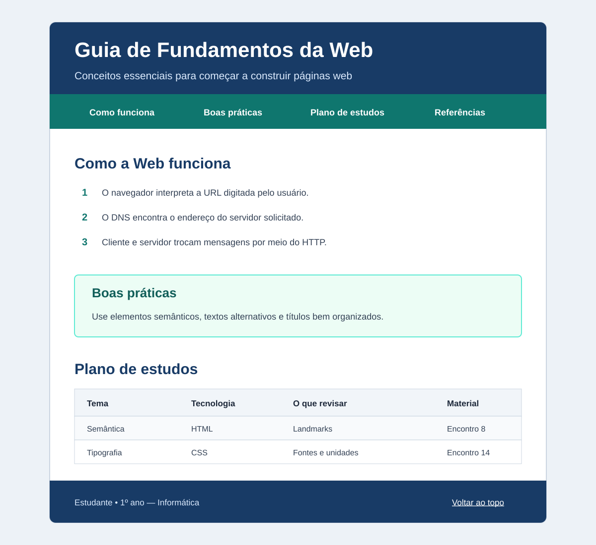

Problema
Você deverá criar, do zero, uma página chamada Guia de Fundamentos da Web. Ela será um material de consulta para estudantes iniciantes e deverá explicar conceitos estudados nos encontros da disciplina de Autoria Web, por meio de uma estrutura HTML5 semântica e de uma identidade visual produzida com CSS.
A atividade integra os fundamentos da Web, a organização de conteúdo em HTML e os primeiros recursos de apresentação visual em CSS. Não é necessário utilizar JavaScript nem técnicas de layout que ainda não tenham sido estudadas.
Organização e entrega
- Crie uma pasta com seu nome e sobrenome:
nome-sobrenome. - Dentro dela, crie os arquivos
index.htmlestyles.css. - Desenvolva todo o código a partir de arquivos vazios.
- Entregue a pasta completa, compactada em formato
.zip, pelo Google Sala de Aula.
Requisitos da página
1. Estrutura do documento
- usar
<!doctype html>e o idiomapt-BR; - incluir
meta charset,meta viewportetitledentro dohead; - definir o título da aba como Guia de Fundamentos da Web;
- conectar corretamente o arquivo externo
styles.csscomlink; - organizar o
bodycomheader,nav,mainefooter; - manter indentação consistente e aninhamento correto.
2. Cabeçalho e navegação
- criar um
h1comid="topo"e um parágrafo de apresentação; - criar um
navcomaria-label="Navegação principal"; - inserir links internos para
#funcionamento,#boas-praticas,#estudose#referencias; - garantir que cada link possua um destino existente;
- incluir no rodapé o link Voltar ao topo, apontando para
#topo.
3. Seção “Como a Web funciona”
Crie section id="funcionamento" contendo:
- um
h2; - um parágrafo que diferencie Internet e Web;
- uma lista ordenada que explique, resumidamente, o que acontece entre digitar uma URL e visualizar uma página;
- uma explicação que use corretamente os termos URL, DNS, HTTP, cliente, servidor e navegador;
- um link externo para o material da disciplina, com texto que explique claramente qual material será aberto.
4. Seção “Boas práticas”
Crie section id="boas-praticas" contendo:
- um
h2; - um
articlecom pelo menos três recomendações sobre semântica, acessibilidade ou organização do código; - um
asidecom um aviso curto sobre um erro comum de iniciantes.
5. Seção “Plano de estudos”
Crie section id="estudos" com uma tabela contendo:
captiondescritivo,theadetbody;- as colunas Tema, Tecnologia, O que revisar e Material;
- cabeçalhos
thcomscope="col"; - pelo menos quatro linhas de dados;
- pelo menos um link para um material de revisão.
6. Referências e rodapé
- criar uma área identificada por
id="referencias"; - apresentar, em uma lista, pelo menos duas fontes consultadas;
- inserir no
footero nome do estudante, a turma e o link Voltar ao topo.
Requisitos do CSS
O arquivo styles.css deverá conter:
- estilos para
body,header,nav,main,sectionefooter; - tipografia legível com
font-family,font-sizeeline-height; - hierarquia visual entre
h1,h2,h3e os parágrafos; - paleta de cores coerente e contraste adequado entre texto e fundo;
- conteúdo com largura máxima e centralização usando
max-widthemargin; - aplicação intencional de
marginepadding; - uso de unidades relativas, como
%erem, nos tamanhos e espaçamentos principais; - estilos por elemento, classe e identificador;
- destaque visual para o
aside; - estilos básicos para links e tabela.
Exemplo visual do resultado esperado
O exemplo abaixo apresenta uma possibilidade de organização visual. Ele serve como referência para hierarquia, cores e espaçamentos; não é necessário reproduzi-lo exatamente. O conteúdo e o código deverão respeitar os requisitos desta atividade.
